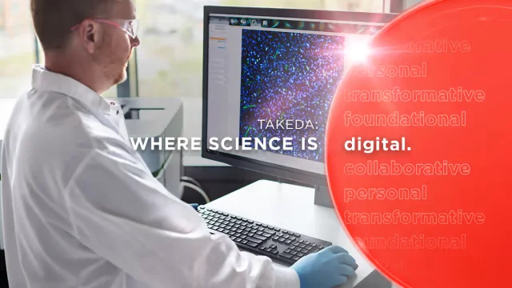
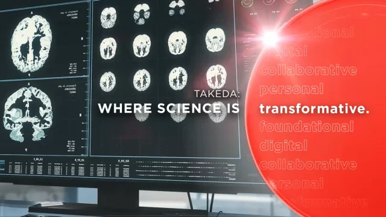
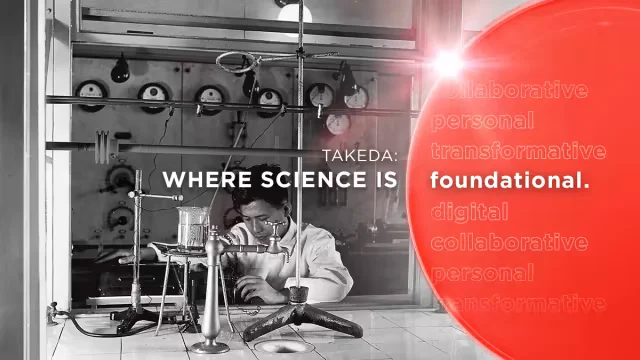

Pharmaceutical Enzymes are protein – biological catalysts that speed up chemical reactions in living organisms. These can be used as drugs, which have two important features that distinguish them from all other types of chemical drugs.
First, they bind and act on their targets with great affinity and specificity. Second, they are catalytic in nature converting multiple target molecules to the desired products.
Most therapeutic enzymes are produced industrially using fermentation techniques with microbial strains, plant or animal cell cultures, and genetically engineered organisms.
This can be used as digestive aids.
Every transformational medicine we develop starts with a spark of inspiration; an idea that captures our collective imagination and pushes us to think beyond the boundaries of what is possible today.
Read these stories about how our science is inspiring innovation for patients.

Integrating data sciences into clinical development
LEARN MORE
Pursuing life-transforming science
LEARN MORE
Harnessing science to push the boundaries of what's possible
LEARN MOREPrecision diagnostics powered by cutting-edge biotechnology and smart laboratory systems.
NEED ANY HELP?